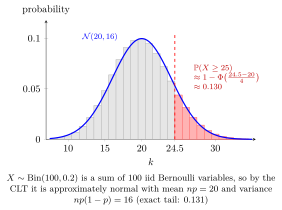

curriculum-current
pd-week08
Normal Approximation to the Binomial
For X n ∼ Bin ( n , p ) X_n\sim\operatorname{Bin}(n,p) X n ∼ Bin ( n , p ) p ∈ ( 0 , 1 ) p\in(0,1) p ∈ ( 0 , 1 ) n → ∞ n\to\infty n → ∞
X n − n p n p ( 1 − p ) → d N ( 0 , 1 ) . \begin{aligned}
\frac{X_n-np}{\sqrt{np(1-p)}}\xrightarrow{d}\mathcal{N}(0,1).
\end{aligned} n p ( 1 − p ) X n − n p d N ( 0 , 1 ) . For a finite n n n n p np n p n ( 1 − p ) n(1-p) n ( 1 − p ) n n n
A large binomial count can be approximated by a normal variable with the same mean and variance , as a consequence of the CLT for Bernoulli sums.

For fixed 0 < p < 1 0<p<1 0 < p < 1 X n ∼ Bin ( n , p ) X_n\sim\operatorname{Bin}(n,p) X n ∼ Bin ( n , p ) E X n = n p \mathbb{E}X_n=np E X n = n p Var ( X n ) = n p ( 1 − p ) \operatorname{Var}(X_n)=np(1-p) Var ( X n ) = n p ( 1 − p )
For a finite-n n n k k k P ( X n ≤ k ) ≈ Φ ( ( k + 1 / 2 − n p ) / n p ( 1 − p ) ) \mathbb{P}(X_n\le k)\approx\Phi((k+1/2-np)/\sqrt{np(1-p)}) P ( X n ≤ k ) ≈ Φ (( k + 1/2 − n p ) / n p ( 1 − p ) )
For X ∼ Bin ( 100 , 0.5 ) X\sim\operatorname{Bin}(100,0.5) X ∼ Bin ( 100 , 0.5 ) P ( X ≤ 60 ) ≈ Φ ( 2.1 ) ≈ 0.9821 \mathbb{P}(X\le60)\approx\Phi(2.1)\approx0.9821 P ( X ≤ 60 ) ≈ Φ ( 2.1 ) ≈ 0.9821
For X ∼ Bin ( 100 , 0.2 ) X\sim\operatorname{Bin}(100,0.2) X ∼ Bin ( 100 , 0.2 ) P ( X ≥ 25 ) ≈ 1 − Φ ( ( 24.5 − 20 ) / 4 ) ≈ 0.1303 \mathbb{P}(X\ge25)\approx1-\Phi((24.5-20)/4)\approx0.1303 P ( X ≥ 25 ) ≈ 1 − Φ (( 24.5 − 20 ) /4 ) ≈ 0.1303
Nicky van Foreest · Probability Distributions · Week 8
Symbols: element of, infinity, phi, square root
Last updated: 8 October 2026 01:09
Normal Approximation to the Binomial Binomial Distribution (Probability Theory for EOR) Central Limit Theorem Continuity Correction Standard Normal Distribution (Probability Theory for EOR)